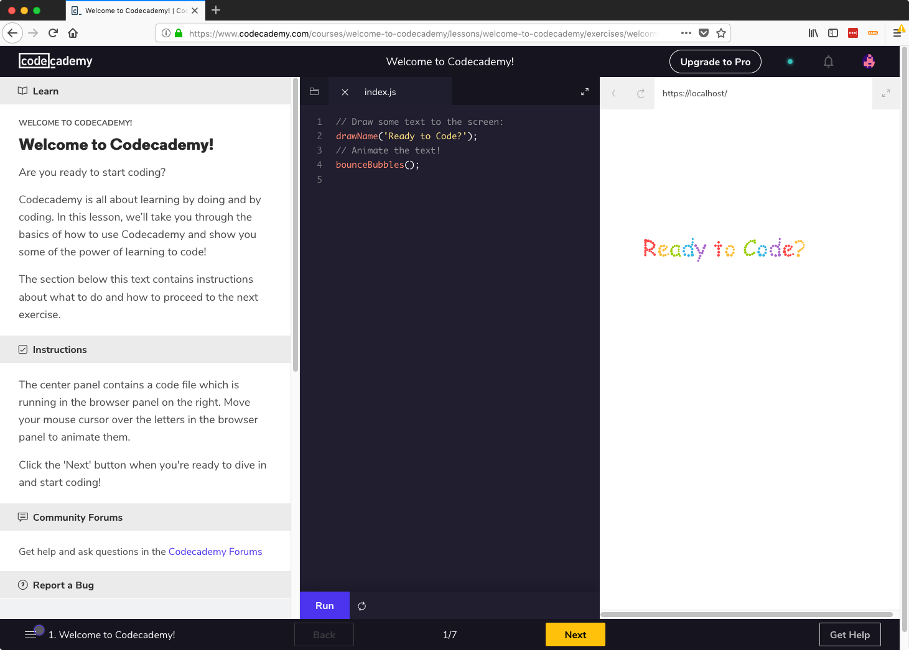

Welcome
Welcome to ITP 175! This module we'll
- get some of our tools setup
- get acquainted with each other
- touch the tip of the computer science iceberg
Introducing most of the tools used in this course
Below are most of the core tools we'll use for this course. It isn't everything we'll use throughout the semester, but we'll add the others when they become necessary.
Slack
Slack is our communication tool.
Visit our signup page and create an account with your myRCC email address.
If you're new to Slack, read What is Slack? or watch What is Slack? on youtube
You've successfully joined our slack when you see a page like this. If you are new to slack, you won't see the left-most sidebar with all the icons.
I recommend you install the desktop and mobile apps, but it is not required. The web app can always be found at https://itp175fa18.slack.com
Github
Git is a popular version control software used by developers around the world. We'll learn more about how git works a little later.
Visit https://github.com and create an account with your myRCC email address.
Choose the
unlimited public repositories for freeoption and click the greenContinuebutton. You do not need to check either of the two checkboxes.Respond to the questions how you see fit, they are not used for this course.
When you've completed sign up, you should see a screen like this and have an email asking you to verify your email address in your inbox. Click the link in that email to verify your address.
Codecademy
Codecademy.com is a website for learning and practicing programming concepts and is a tool we'll be using frequently.
Visit codecademy.com and click the Github icon in the bottom-right corner to login with your Github account.
Click the green
Authorize Codecademybutton and enter your Github password if asked.Codecademy really wants you to signup for their Pro service, which is NOT required for this course. Anytime you are asked to sign up for Pro, you can skip or exit out of that.
Click the black background to opt out of the Pro trial and you should see a screen like this
Click the
Skip to Dashboardbutton in the upper right and you'll be taken to your dashboard.Click the yellow/orange
Startbutton on the Welcome to Codecademy! course. This course walks you through the codecademy interface. Be sure to click the X on the upgrade to Pro banner.
The Welcome to Codecademy course does introduce some programming concepts. If you have trouble completing it, do not be discouraged, you are not required to have prior knowledge of programming to take ITP 175.
What is most important is that you understand how the codecademy interface works for when we use it to learn and practice concepts later.
Markdown
Markdown is a markup language that makes it easy to write rich text documents that display nicely online. You will encounter it on github and glitch.
In fact, this page you're reading is written in Markdown. Visit https://raw.githubusercontent.com/ITP-175-FA18/syllabus/master/00-welcome.md to see what it looks like without formatting.
- Go through NCSU's Markdown Tutorial to get an introduction to the Markdown language.
Extra Resources
- Markdown-Cheatsheet - text
- Markdown Crash Course - 20m video